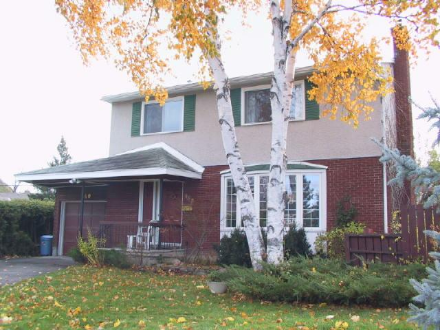

We made an offer in November 2001 on a house located at 960 Kincaid Court in Ottawa. We liked a lot of things about it, including the location, the amount of space, and the yard. Of course, we started imagining all the things we would do with the rooms, renovations we would do, and so on. Unfortunately, the inspection was a huge disappointment. There are unexpected issues with the foundation of the house, the overall structure of the garage, and the furnace. We knew we'd be re-doing floors, having the place painted, and replacing a roof in a couple of years. However, this is more than we're ready to deal with.
The garage alone probably needs about $12,000 worth of work, including foundation, walls, roof framing, and new shingles. There are deposits of oily soot on walls in various rooms that appear to have been caused by a furnace (this one? the previous one? who can know?). Probably to deal with that properly would require switching to a gas furnace, washing the walls with tri-sodium phosphate, and then painting. If you just washed and painted the walls, you might be doing the same thing again in two years. Then there's the house foundation. We're guessing the footing is cracked in two places near one corner (the back corner on the opposite end from the garage). There are two cracks in the foundation wall that run right up through the bricks, and the slab is also cracked.
We're really disapointed, because the house has lots going for it:
We feel sad for the current owners, who are elderly and need to sell in order to move into a condo that's easier for them to deal with. They have lived there since the house was built in 1962, and raised 5 children there. I'm sure it is hard for them to leave as it is, and these issues are likely going to come as a shock to them.
 Up to Our Family Home Page
Up to Our Family Home Page